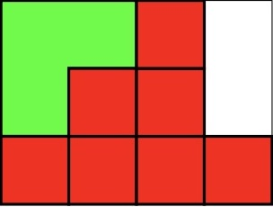
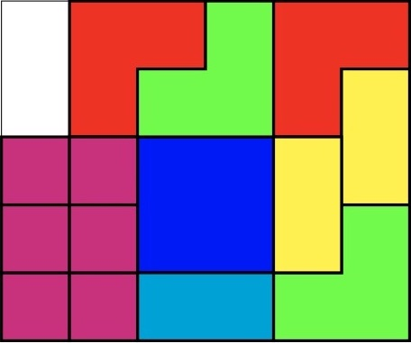

A sliding block puzzle is a puzzle where pieces are confined to a grid and by sliding the pieces a final configuration is reached. In this problem the pieces can only be slid in multiples of one unit in the directions up, down, left, right.
A reachable configuration is any arrangement of the pieces that can be achieved by sliding the pieces from the initial configuration.
Two configurations are identical if the same shape pieces occupy the same position in the grid. So in the case below the red squares are indistinguishable. For this example the number of reachable configurations is $208$.

Find the number of reachable configurations for the puzzle below. Note that the red L-shaped pieces are considered different from the green L-shaped pieces.

solve() → ?